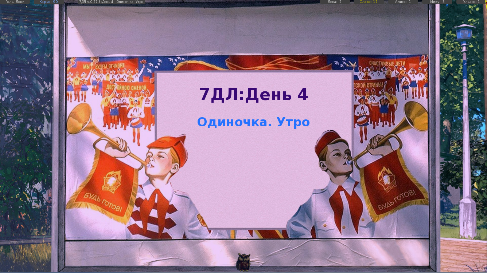

1 Флудильня » Бар "7 летних ночей" - 7 » 2016-12-31 14:25:13
Пожалуй, стоит к пожеланию так же добавить всем стальных нервов и ящик валерьянки, кто знает что в след. году преподнесут тов. Автор и Кошкотим. 

7 дней лета |
Вы здесь » 7 дней лета » Результаты поиска
Пожалуй, стоит к пожеланию так же добавить всем стальных нервов и ящик валерьянки, кто знает что в след. году преподнесут тов. Автор и Кошкотим.
Дорогие форумчане!
Поздравляю Вас с наступающим Новым годом!!!
Желаю, от всей души, всего самого замечательного и чудесного, счастья, здоровья, успехов, хорошего настроения, любви, удачи!
Исполнения всех самых заветных желаний, загаданных в новогоднюю ночь!
Желаю, чтоб всё задуманное и желаемое обязательно свершилось и сбылось!
Хороших новых друзей, новых открытий, новых встреч!
Хороших незабываемых праздников, весёлого и приятного отдыха!
Пусть на нашем сайте и в наших домах всегда царит дружба, взаимопонимание, уважение, преданность, верность, мир!
Счастья! Удачи! Любви!
С наступающим 2017 годом!!! 

Тов. leeb, если память не изменяет (а ей рано xD), то первое прохождение Ольги всегда будет заканчивать одной и той же концовкой. Так что смело запасайтесь чаем, укутывайтесь в плед и вперёд покорять рут Оли ещё.
P.S. ЛП требуется в районе 11-12 (етить всё уже забыл, пошёл проходить Ольгу, попутно захватив Алису  )
)
Я тут уже рукава начал закатывать, думал вот оно, пришло время начать войну за имя Алисы, но чот дело куда-то в сторону уехало 
Выбор Герк-Локи-дрищ, это вообще где и как происходит? В начале игры три картинки на чёрном фоне и можно три варианта выбрать это оно? Если да, то кто из них кто?
Да выбор происходит именно здесь. Слева - Локи, центр - Герк, справа - Дрищ.
И в чём разница между этими эээ... персонажами?
Мало чем отличаются, главная разница это уникальные концовки.
И второй вопрос - как включить счётчики всяких SP, LP и что каждый из них значит?
Посмотри в фильтрах, там добавится название "Прогресс и информация по моду 7ДЛ" или что-то такое, не помню.
Меня чего, боятся штоле?! Што за реверансы?!
Злой кот - это очень страшно, так что бояться стоит. Вдруг потом неведомая сила не даст попасть в кошкорут 
Regolas, если появится хоть малейшее желание, то пройду БХ и поделюсь мнением. Хотя я думаю, 7ДЛ быстрее весь выйдет, чем у меня возникнет то самое желание.
Тов. Chess, прошу простить, если оскорбил. Я себя веду бестактно переходя на "Ты", но надеюсь это простится и мы сможем начать всё с чистого листа.
Котятки! А вы заметили, што Чессу аватарку новую подогнали? Сам Драуг рисовал, между прочим!
Драугу, большой респект, за новый аватар. Но что Чесс, думает за прекрасный бутыль, предоставленный великому котику?
Вышла, кстати, на днях обнова БХ, кто-нибудь осилил это чудо?
Да простят меня все, глупого человека, но если идёт о Бесконечном Х., то у меня одна мысль, как говориться когда-нибудь в другое время обязательно, но не сейчас. Я надеюсь не оскорблю ни чьих чувств, но у БХ возможно что-то и есть, но на мой взгляд, пока больше понтов(в частности автора, столько подкастов, а по сути извиняюсь не хрена. Я могу тоже разглагольствовать над темой часами.), чем дела. Может я и отношусь предвзято, но как есть.
На харкаче
Тов. Otsdarva, спасибо. Побывал там, удалось и поплакать от смеха и погореть. Больше туда ни одной ногой, а то понесёт глупого ньюфага в срач.
До слёз, особенно про лодку 
И где данное произведение было накатно, хотелось бы почитать комментарии школоты.
Бывает. Срач зажёг сердца форумчан и явился он... Новый рекорд посещаемости сайта зафиксирован вчера.
Мику - девушка легкого поведения, которая не ищет серьезных отношений. Ей просто надо потрахаться.
Наверное я чего-то не понимаю, но в каком месте, вся ситуация с Мику может быть ошибкой автора? Мнение одного независимого эксперта, просто сменило ваше мировоззрение. Оу, вот так новость, а позвольте узнать, по каким же критериям, ваш товарищ проследил, что Мику это просто шлю... А то не дай, о святая ОД, что моя девушка окажется такой же.
Chess пару капель чудодейственной валерьянки и можно ударяться в любую дискуссию.
Чесс занималсо концептом и логической схемой рута им.Кошочки, пишут его на данный момент тащи Бегун и Перегаррет
Спасибо, теперь глупый человек знает, кто стоит за всей работой.
"А почему мне не сказали?!" ©
Нельзя отвлекать великого кота. Кошечко-рут сам себя не напишет 
epicfailman, эх жаль нет кнопочки "сказать спасибо" для поста. Так что, как в старые добрые, могу сказать - двачую
Что-то в баре стало в последнее время жарко, даже меня неактивного засранца, пожар заставил выползти из под стола. Уже даже интересно, чем данная размолвка закончится.
Добрый вечер, господа.
dancerh, спасибо большое. Давно пора забрести на кошечко-рут.
Добрый вечер товарищи. Решил вернуться к великому моду товарища 7dl-kun'a. И в самом начале увидел приписочку, включить DLC или нет? Соответственно вопрос, на что это повлияет.
P.S. Да ленивый, искать в лень, уважаемые знатоки просвети, ведь дело минутное чиркнуть сообщение, на влияние DLC.
Mosk1tol верно. Это +/- полчаса (РФ), так же есть достижение +/- полчаса (СССР).
Пожалуй, усложню-ка я выходы на Мику ещё больше.
Тов. 7dl-kun, пожалейте бедные умы человечества. Тут же вопросов, на тему выхода на рут, будет вагон и маленькая тележка.
Я вообще имел ввиду то, что если идти не на сцену, а к ней в клуб, то как-то странно, что после танцев выходишь на рут одиночки.)
Да вроде бы всё логично на данном этапе. Рут который должен быть в клубе не готов, поэтому с чистой душой вылетаем на одиночку.
Surv, это скорее всего разъезд по концовкам и вариативности прохождения. Правда не исключено, что я глубоко ошибаюсь 
KriJas здравствуйте. Попробую ответить на ваши вопросы.
Я пытался выйти на ОД рут через Сыча с Герка, постоянно получаю Автобус=Леп (ну вы поняли)
У Герка на Ольгу можно выйти через ФЗ рут Лены. (Сам не пробовал, но видел несколько раз сообщения на эту тему.)
Затем я плюнул и пошёл на ветку Сыча с Дрыща, и вот я ну руте Одиночки, далее рут ОД, и вот она концовка после выбора со Славей, заканчивается если я правильно помню ачивой (Лучше не просыпаться), загружаю с 6 дня мотаю до разговора с Шизой на шезлонги и тут идёт другая ветка, заканчивается если я правильно помню ачивой (Чудо по имени ОЛЬГА)
После первого прохождение ОД, открываются дополнительные сцены и новые концовки.
Во первых: есть ли еще какие то ветки ? если да то как на них выйти
Ольга имеет 4 концовки, я не заметил сильно много ветвлений, но материала для чтения хватает.
Во вторых: как я не старался вчитаться и понять текст, я так и не понял сути, как там всё произошло, может как то стоило вам понятнее сделать ? нет, я конечно понимаю всё в духе БЛ и всё такое, но не до такой же степени упарыватся фантасмагориями, по сему прошу разъяснения по обеим вышеупомянутым концовкам =)
Тут, пожалуй, я вам мало чем могу помочь. Но история уж и не такая тяжёлая, попробуйте пройти её ещё несколько раз. Пройдите все концовки Оли и возможно у вас всё встанет на свои места.
В третьих: тут чуть выше писали про какой то выбор между Шизой и гг, так вот, в каком руте, в каком месте этот выбор встречается ? и в каком опять же руте про него говорит Церновна ?
Привет, я тут тоже нуб. Хотя пробежавшись по форуму и почитав сообщения, то могу предположить, что если я всё правильно понял, то Шиза - есть внутренний голос Семёна. То тогда выбор происходит в руте Ольги, там же о нём и более подробно рассказывают. (Уважаемые знатоки поправьте если не прав и киньте тапок.)
P.S. очень, крайне не хватает полной карты по всем рутам, выборами ветвлениям и концовкам с подсчётом всех очков и кармы
Можете попробовать сделать, всё в ваших руках)
Думаю, Вы так иносказательно высказались о послеобеденном эвенте Слави
Совершенно верно. Спасибо за ответ.
А для полноценного выхода на рут нужно "погеройствовать" с ключами перед вожатой.
Прикрыл Славю с ключами. Но ключевым моментом стал выбор в 3 дне, помочь Славе с очередным заданием или нет. Похоже, девушка не оценила, что я не хочу таскать колонки на площадь. =)
С крыши в конце 3-его дня слетаем ?
Да, слетел с крыши, но всё равно вылетел на одиночку. В данном случаи кибернетики дёрнули во время танцев.
Перепроверил свои выборы, изменил один, теперь вышел на Славю. - Электроник забрал Семёна, когда тот шатался по пляжу, после первого танца со Славей.
Здравствуйте, уважаемые знатоки. И сегодня меня поразил данный момент, так как вылетел впервые:

Очков вроде бы достаточно, но летим в одиночку. Хотел бы узнать, почему так произошло.
P.S. Текст не читал, ответы выбирались на автомате, ради перемотки на 4 день Слави.
Midfinger
Надо лучше стараться! Кхм... Точнее надо читать темки на форуме, уже ни один раз говорилось, что Мику-рут сейчас закрыт и сколько бы очков не было набрано, вас выкинет на одиночку. Но за-то в вашем распоряжение есть Мику-DJ рут, на который можно выйти выполнив небольшие манипуляции в третий день, а именно... Думайте сами, решайте сами.
Вы здесь » 7 дней лета » Результаты поиска